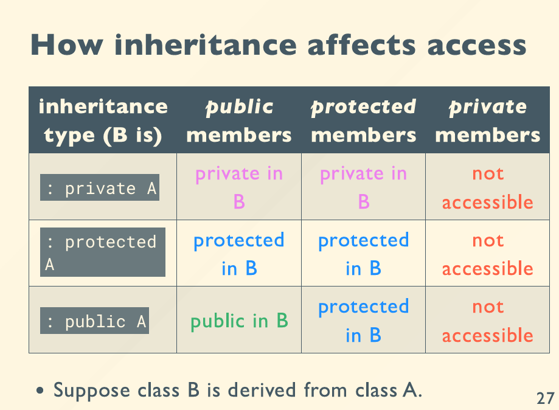

6
constructor destructor
X global global_x;
void foo(){
static X static_x;
X local_x1;
X *p = new X;
{
X local_x2;
}
delete p;
}
对于global变量，我们在main函数之前就构造，在程序结束时析构。
static只执行一次构造函数(第一次运行到这里的时候)，但是其析构一直延续到程序结束调用。
local_x1在每次运行到这的时候执行构造函数，这个foo函数结束执行析构函数。
p动态申请的空间，new的时候构造，delete的时候析构，那不delete其实就不析构了。
local_x2的作用域窄一点，也是运行到这构造，但是代码块结束的时候就析构。
RAII
将申请的资源与类的生命周期绑定，防止忘了delete这类的情况。
比方说，对于这段代码：
void bad(){
m.lock();
if (!everything_okay()){
return; // should unlock m here!
}
m.unlock();
}
那如果everything_okay()返回false，那unlock就不会执行，锁就不会释放，造成死锁。
我们可以利用RAII的lock_guard，实现自动释放锁。
default constructor
不写constructor，编译器会自动生成一个默认的构造函数。
initializer list
举个小例子：
struct X {
int y;
X() {
y = 10;
cout << "X::X()" << endl;
}
}
我们可以改写做：
struct X {
int y;
X() : y(10) {
// y = 10;
cout << "X::X()" << endl;
}
}
这样看起来没多少区别，那我们改一下，自定义一个类型y。
struct Y {
int i;
Y(int ii) {
i = ii;
cout << "Y::Y(int)" << endl;
}
}
// change something here
struct X {
Y y;
X() {
y = 10;
cout << "X::X()" << endl;
}
}
这样它就要报错了，报的是说y没有默认构造函数。
为什么？对于y = 10而言，已经不是初始化了，而是赋值。我们看到上面X() {了，编译器就认为你是使用了默认的X() :Y()，这样还对吗？所以相当于是两步了。
其实改成这样也可以：
struct X {
Y y;
X() {
y = Y(10);
cout << "X::X()" << endl;
}
}
这样实现的是隐式转换，Y(10)会隐式转换成Y，然后赋值给y。
因此，初始化维埃丝赋值，你们知道吗？
-
Student::Student(string s) : name(s) {}，这是显式初始化 -
Student::Student(string s) { name = s; }，这是隐式的初始化后copy的赋值，需要一个default constructor。
local variable vs field
void TicketName::RefundBalance(){
int amountToRefund;
amountToRefund = balance;
balance = 0;
return amountToRefund;
}
amountToRefund是with function call的balance是with object的
然后一个略显奇怪的问题：
#include <iostream>
using namespace std;
struct X {
int i;
double d;
void foo(){
cout << &i << " " << &d << endl;
}
}
int main(){
X x1;
X x2;
x1.foo();
x2.foo();
}
编译器怎么判断x1和x2的i与d？
其实是因为foo()函数有一个隐式的X * this参数。
其实x1.foo()本质是:X::foo(&x1)，其他内部的操作，其实都在用这个x1对应的this指针去操作的。
Constant objects
编译器如何判断一个对象是常量？
struct X {
void foo(){
cout << "non-const foo()" << endl;
}
void foo() const {
cout << "const foo()" << endl;
}
}
int main(){
const X x;
// X x;
}
编译器会将foo() const改成foo(const X *this)，避免了冲突。
你要确定函数如果是只读的，那就加上const。
constant field
struct X {
const int i;
X(int ii) {
i = ii; // error!
}
}
这个i一定得放在构造函数的初始化列表里面，即：
struct X {
const int i;
X(int ii) : i(ii) {}
...
}
static members
struct X {
static int i; // declaration
static void foo(); // declaration
}
int X::i = 10; // 不写编译过不去，因为这是一个definition
compile-time constants in class
class ...{
const int size;
int arr[size]; // error!
}
改为static const int size后可以了，即让他不要跟着类走。
header file
overhead for a function call
inline 维埃丝 macro
macro：预处理的文本替换inline：编译器在编译的时候，直接把函数的代码替换到调用处，减少了函数调用的开销。
inline是个请求，编译器自己会思考要不要使用inline优化。
同时，inline关键字也会使得multiple definitions are permitted。
composition and inheritance
composition
- the relationship of has-a
inheritance 继承
- the relationship of is-a
共享已有的类。
base class -> derived class
基类、派生类。
struct A {
int x;
}
struct B {
A a;
}
struct C : public A {
}
int main(){
B b;
C c;
b.a.x;
c.x;
}
外界不能访问protected的成员函数，但是派生类里面可以。

struct Base {
public:
Base(int i) {}
...
}
struct Derived : public Base {
public:
Derived() : address("dremig"), address("zju"), Base(10) {} // pay attention to this
private:
string address;
string name;
}
Base先构造，`Derived后构造，Derived先析构，Base后析构。